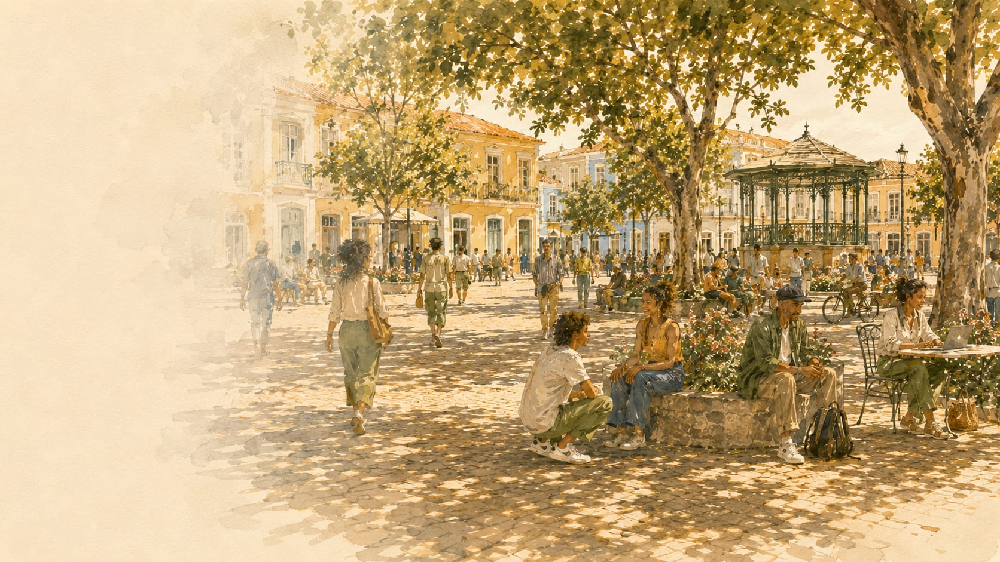
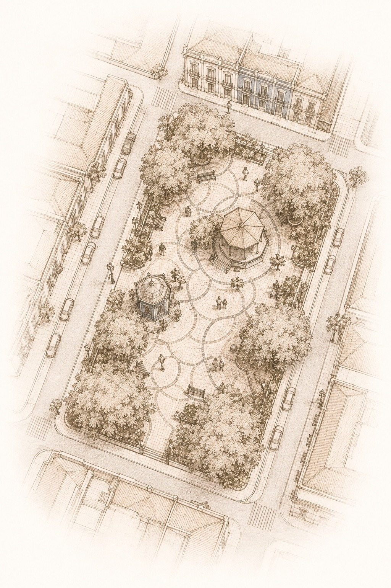
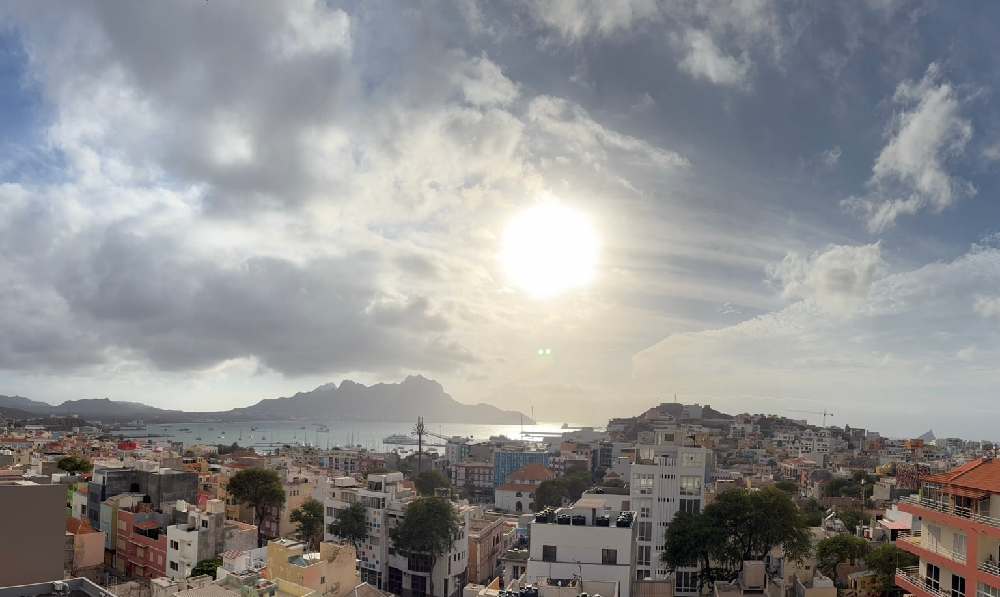

About
About A PRASA
A place to find what moves you.
A PRASA is an independent, source-led digital public square for discovering useful information, opportunities, culture, local knowledge, organizations and ways to participate.
It is designed to make the distance between finding something useful and knowing what to do next a little shorter.

Why A PRASA exists
Why A PRASA exists
Useful information is often already out there.
The harder part can be finding it at the right time, understanding whether it is relevant, knowing where it came from and figuring out what to do next.
An opportunity may sit on one website. An event may appear only on social media. An organization may be doing valuable work without an easy way for people to discover how to reach or support it. Practical local information may be scattered across several places.
A PRASA brings useful starting points together.
The aim is not to keep people inside A PRASA. It is to help people discover, understand and connect—and, where possible, reach the person, organization, service or original source that can take them further.
Our mission
To make useful information, opportunities, local knowledge and ways to participate easier to find, understand and act on—connecting people to real sources and practical next steps.

What is A PRASA?
What is A PRASA?
And, in another sense: what is a “prasa”?
Around the world, the public square is a place where people, paths and possibilities come together.
That idea is at the heart of A PRASA.
Prasa is a Cape Verdean Kriolu form related to Portuguese praça, referring to the idea of a square or public gathering place. Cape Verdean Kriolu varies across islands and communities, including in spelling and usage, so A PRASA does not present the name as a single universal expression for every variety of the language.
The full name A PRASA is the chosen name of the brand. For an English-speaking reader, it also carries a simple second reading: a prasa—a place, a square, a shared starting point.
The same basic idea appears in different languages and places:
prasa · praça · plaza · piazza · plein · Platz · площа
Different words and different places, but a familiar human idea: a space where people and possibilities meet.
A PRASA brings that idea online.
It is intended to be more than a directory, a pay-to-play listing or an endless attention-driven feed. The goal is to help people discover something useful, understand where it comes from and move outward toward the real source or a practical next step.

Rooted in Cabo Verde
Rooted in Cabo Verde
A PRASA is rooted and being developed in Cabo Verde, with its earliest public work especially grounded in Mindelo and São Vicente.
That starting point matters.
The platform is being shaped through real local information, organizations, culture, opportunities, practical needs and community participation—not through an abstract idea of what a place should need.
At the same time, A PRASA is not intended to be permanently defined by one city, island or country.
The longer-term ambition is to develop a digital-public-square model that can adapt to other communities while remaining grounded in the sources, knowledge and character of each place.
Cabo Verde is A PRASA's root and starting point, not a boundary around what the idea may eventually become.
What you can find
What you can find
The areas on A PRASA are different, but they share the same purpose: helping people move from discovery toward something useful.
Culture & local life
Things to Do
Discover cultural events, exhibitions, performances, music, community gatherings, entertainment and other useful ways to take part in local life.
The purpose is broader than tourism or entertainment. This area is intended to make culture and participation easier to discover for people who live in a place as well as people getting to know it.
Trainings, Tools & Opportunities
Find learning opportunities, professional-development resources, workshops, career tools and other routes for developing skills or pursuing an opportunity.
Over time, this may include internships, scholarships, employment-related opportunities and local or international pathways.
Where feasible, the goal is not simply to show that an opportunity exists, but to help make the next step easier to understand.
Organizations & Ways to Help
Discover organizations and initiatives doing useful work and learn how to reach them.
Over time, this area can make it easier to understand what an organization does, where it works, how to contact it and, when relevant, whether there are practical ways to volunteer, contribute materials, provide support or otherwise take part.
A PRASA does not replace the organization itself. The goal is to make the route to it clearer.
Practical local knowledge
Mindelo Essentials
Find practical, place-based information that can make everyday life easier to navigate.
This can include useful starting points for transport, services, everyday needs and other local questions, with links or directions to reliable sources wherever possible.
A PRASA is not the official authority for those services. Its role is to make useful information and the appropriate source easier to reach.
How A PRASA works
How A PRASA works
A PRASA is source-led.
Information may be identified through providers, organizers, institutions, public sources and other appropriate original or reliable sources. People may also suggest information or report corrections.
Where practical, A PRASA connects people directly to the provider or original source so they can continue beyond the platform.
Information is subject to human editorial review. Submission does not guarantee publication.
When A PRASA shows that information was checked or reviewed on a particular date, that means the information or its source was examined at that point in time. Details can change afterward.
For time-sensitive or consequential information, confirm current details with the relevant provider or source before acting.
Independent by design. Editorial inclusion is not for sale, and commercial relationships do not determine ordinary editorial decisions.
Take part
Take part
A useful public square benefits from people pointing out what others may have missed.
You can:
- suggest an event, opportunity, organization or other useful information;
- share information that may be relevant to A PRASA;
- report something that appears outdated, incomplete or incorrect.
Submissions are reviewed before publication.
If you are submitting something on behalf of an organization or activity, provide the clearest available original or provider source.
If you find an error, a correction is welcome.
More about A PRASA
More about A PRASA
Independent by design
A PRASA is independent.
It is not part of, and does not act on behalf of, the organizations, institutions, businesses or public bodies that may appear or be linked on the platform unless a specific relationship is explicitly stated.
A PRASA connects people to sources; it does not become the source simply by linking to one.
Ordinary inclusion should not be understood as official verification, certification, accreditation, endorsement or a guarantee of a provider, organization, opportunity, service or outcome.
Commercial relationships do not control ordinary editorial decisions.
Payment cannot purchase ordinary editorial inclusion, ranking, verification, endorsement, favorable editorial treatment or exemption from A PRASA's standards.
A current or former professional-services client may appear on the public platform only when independently eligible under the same editorial standards applied to others.
A PRASA likewise does not use editorial decisions to pressure an organization to purchase professional services or punish an organization for declining or ending a commercial relationship.
Where a commercial relationship would be materially relevant to how a reasonable person interprets editorial treatment, it should be disclosed appropriately.
If paid promotional visibility is introduced in the future, it must be clearly distinguished from ordinary editorial inclusion and may apply only to material independently eligible under A PRASA's standards.
Who is behind A PRASA
A PRASA currently operates through A PRASA, SOCIEDADE UNIPESSOAL LDA., a founder-owned, for-profit company registered in Cabo Verde.
A PRASA was founded by Jason La Mard Jones, who serves as Founder & Principal Consultant.
Alongside the public discovery platform, A PRASA can undertake professional work in areas connected to its capabilities and expertise.
That professional work is separate from editorial decisions on the public platform. Purchasing professional services does not buy public-platform inclusion, preference or endorsement.
Detailed professional services belong in a separate commercial context rather than turning the public About experience into a services page.
Where A PRASA is going
Today, A PRASA is deliberately small, curated and source-led.
It brings together selected useful information and provides routes toward original sources and providers. Human editorial judgment remains part of how information is selected, checked and presented.
It does not attempt to contain everything a community might need.
The longer-term ambition is to develop a stronger digital-public-square model: one that makes useful local knowledge, opportunities, participation and connections easier to navigate without turning the experience into an attention contest.
That may eventually mean deeper pathways from information to action, stronger ways to understand organizations and opportunities, and models that can adapt to other communities.
Those are directions for development, not descriptions of capabilities or services that already exist.